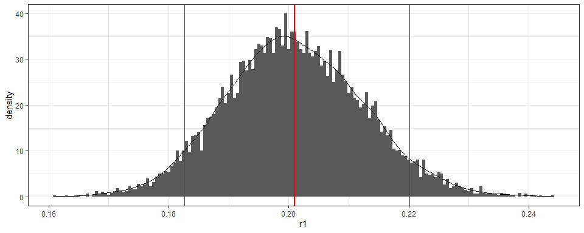
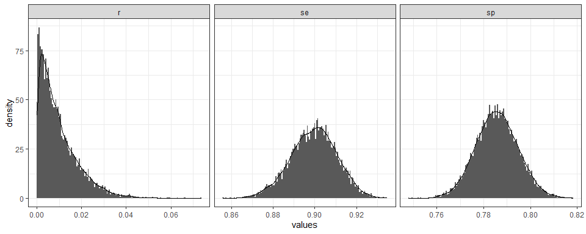

The goal of serosurvey is to gather functions and workflow templates for Serological Survey Analysis For Prevalence Estimation Under Misclassification.
Example
This is a basic example which shows you how to solve a common problem:
survey: Estimate single prevalences
-
From a
srvyrsurvey design object,serosvy_proportionestimates:- weighted prevalence (
prop), - total population (
total), - raw proportion (
raw_prop), - coefficient of variability (
cv), - design effect (
deff)
- weighted prevalence (
serosvy_proportion(design = design,
denominator = covariate_01,
numerator = outcome_one)
#> # A tibble: 6 x 23
#> denominator denominator_lev~ numerator numerator_level prop prop_low
#> <chr> <fct> <chr> <fct> <dbl> <dbl>
#> 1 covariate_~ E outcome_~ No 0.211 0.130
#> 2 covariate_~ E outcome_~ Yes 0.789 0.675
#> 3 covariate_~ H outcome_~ No 0.852 0.564
#> 4 covariate_~ H outcome_~ Yes 0.148 0.0377
#> 5 covariate_~ M outcome_~ No 0.552 0.224
#> 6 covariate_~ M outcome_~ Yes 0.448 0.160
#> # ... with 17 more variables: prop_upp <dbl>, prop_cv <dbl>,
#> # prop_se <dbl>, total <dbl>, total_low <dbl>, total_upp <dbl>,
#> # total_cv <dbl>, total_se <dbl>, total_deff <dbl>, total_den <dbl>,
#> # total_den_low <dbl>, total_den_upp <dbl>, raw_num <int>,
#> # raw_den <int>, raw_prop <dbl>, raw_prop_low <dbl>, raw_prop_upp <dbl>
serosvy_proportion(design = design,
denominator = outcome_one,
numerator = covariate_01)
#> # A tibble: 6 x 23
#> denominator denominator_lev~ numerator numerator_level prop prop_low
#> <chr> <fct> <chr> <fct> <dbl> <dbl>
#> 1 outcome_one No covariat~ E 0.400 0.216
#> 2 outcome_one No covariat~ H 0.318 0.117
#> 3 outcome_one No covariat~ M 0.283 0.150
#> 4 outcome_one Yes covariat~ E 0.840 0.712
#> 5 outcome_one Yes covariat~ H 0.0311 0.0105
#> 6 outcome_one Yes covariat~ M 0.129 0.0633
#> # ... with 17 more variables: prop_upp <dbl>, prop_cv <dbl>,
#> # prop_se <dbl>, total <dbl>, total_low <dbl>, total_upp <dbl>,
#> # total_cv <dbl>, total_se <dbl>, total_deff <dbl>, total_den <dbl>,
#> # total_den_low <dbl>, total_den_upp <dbl>, raw_num <int>,
#> # raw_den <int>, raw_prop <dbl>, raw_prop_low <dbl>, raw_prop_upp <dbl>
survey: Estimate multiple prevalences
-
In the Article tab we provide a workflow to estimate multiple prevalences:
- using different set of covariates and outcomes as numerators or denominators,
- in one single pipe operation
# crear matriz
#
# set 01 of denominator-numerator
#
expand_grid(
design=list(design),
denominator=c("covariate_01","covariate_02"), # covariates
numerator=c("outcome_one","outcome_two") # outcomes
) %>%
#
# set 02 of denominator-numerator (e.g. within main outcome)
#
union_all(
expand_grid(
design=list(design),
denominator=c("outcome_one","outcome_two"), # outcomes
numerator=c("covariate_02") # covariates
)
) %>%
#
# create symbols (to be readed as arguments)
#
mutate(
denominator=map(denominator,dplyr::sym),
numerator=map(numerator,dplyr::sym)
) %>%
#
# estimate prevalence
#
mutate(output=pmap(.l = select(.,design,denominator,numerator),
.f = serosvy_proportion)) %>%
#
# show the outcome
#
select(-design,-denominator,-numerator) %>%
unnest(cols = c(output)) %>%
print(n=Inf)
#> # A tibble: 25 x 23
#> denominator denominator_lev~ numerator numerator_level prop prop_low
#> <chr> <fct> <chr> <fct> <dbl> <dbl>
#> 1 covariate_~ E outcome_~ No 0.211 0.130
#> 2 covariate_~ E outcome_~ Yes 0.789 0.675
#> 3 covariate_~ H outcome_~ No 0.852 0.564
#> 4 covariate_~ H outcome_~ Yes 0.148 0.0377
#> 5 covariate_~ M outcome_~ No 0.552 0.224
#> 6 covariate_~ M outcome_~ Yes 0.448 0.160
#> 7 covariate_~ E outcome_~ (-0.1,50] 0.182 0.0499
#> 8 covariate_~ E outcome_~ (50,100] 0.818 0.515
#> 9 covariate_~ H outcome_~ (-0.1,50] 0.0769 0.00876
#> 10 covariate_~ H outcome_~ (50,100] 0.923 0.560
#> 11 covariate_~ M outcome_~ (50,100] 1.00 1.00
#> 12 covariate_~ No outcome_~ No 1.00 1.00
#> 13 covariate_~ Yes outcome_~ No 0.0334 0.00884
#> 14 covariate_~ Yes outcome_~ Yes 0.967 0.882
#> 15 covariate_~ No outcome_~ (-0.1,50] 0.218 0.0670
#> 16 covariate_~ No outcome_~ (50,100] 0.782 0.479
#> 17 covariate_~ Yes outcome_~ (-0.1,50] 0.0914 0.0214
#> 18 covariate_~ Yes outcome_~ (50,100] 0.909 0.684
#> 19 outcome_one No covariat~ No 0.939 0.778
#> 20 outcome_one No covariat~ Yes 0.0615 0.0148
#> 21 outcome_one Yes covariat~ Yes 1.00 1.00
#> 22 outcome_two (-0.1,50] covariat~ No 0.549 0.294
#> 23 outcome_two (-0.1,50] covariat~ Yes 0.451 0.219
#> 24 outcome_two (50,100] covariat~ No 0.305 0.188
#> 25 outcome_two (50,100] covariat~ Yes 0.695 0.546
#> # ... with 17 more variables: prop_upp <dbl>, prop_cv <dbl>,
#> # prop_se <dbl>, total <dbl>, total_low <dbl>, total_upp <dbl>,
#> # total_cv <dbl>, total_se <dbl>, total_deff <dbl>, total_den <dbl>,
#> # total_den_low <dbl>, total_den_upp <dbl>, raw_num <int>,
#> # raw_den <int>, raw_prop <dbl>, raw_prop_low <dbl>, raw_prop_upp <dbl>
serology: Estimate prevalence Under misclassification
We gather one frequentist approach (Rogan and Gladen 1978), available in different Github repos, that deal with misclassification due to an imperfect diagnostic test (Azman et al. 2020; Takahashi, Greenhouse, and Rodrı́guez-Barraquer 2020). Check the Reference tab.
We provide tidy outputs for bayesian approaches developed in Daniel B. Larremore et al. (2020) here and Daniel B Larremore et al. (2020) here:
You can use them with
purrrandfurrrto efficiently iterate and parallelize this step for multiple prevalences. Check the workflow in Article tab.
Known test performance - Bayesian method
serosvy_known_sample_posterior(
#in population
positive_number_test = 321,
total_number_test = 321+1234,
# known performance
sensitivity = 0.93,
specificity = 0.975
)
Unknown test performance - Bayesian method
- The test performance is called unknown when test sensitivity and specificity are not known with certainty. (Kritsotakis 2020; Diggle 2011)
- This could arise during an outbreak of a novel pathogen, when lab validation data is available with a limited set of samples. (Daniel B. Larremore et al. 2020)
serosvy_unknown_sample_posterior_ii(
#in population
positive_number_test = 321,
total_number_test = 321+1234,
# in lab (local validation study)
true_positive = 670,
true_negative = 640,
false_positive = 202,
false_negative = 74)
Contribute
Feel free to fill an issue or contribute with your functions or workflows in a pull request.
Here are two publications with interesting approaches using R:
References
How to cite this R package
citation("serosurvey")
#>
#> To cite package 'serosurvey' in publications use:
#>
#> Andree Valle Campos (2020). serosurvey: Serological Survey
#> Analysis For Prevalence Estimation Under Misclassification. R
#> package version 0.0.0.9000.
#> https://avallecam.github.io/serosurvey/
#>
#> A BibTeX entry for LaTeX users is
#>
#> @Manual{,
#> title = {serosurvey: Serological Survey Analysis For Prevalence Estimation Under Misclassification},
#> author = {Andree {Valle Campos}},
#> year = {2020},
#> note = {R package version 0.0.0.9000},
#> url = {https://avallecam.github.io/serosurvey/},
#> }